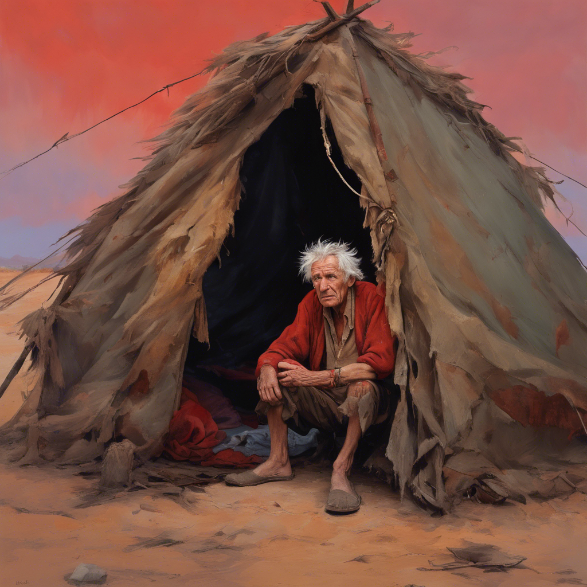

El Anciano te habla
El anciano te invita a entrar a su casa. Te ofrece beber de una bolsa.
Procedes a beber, no sabes que liquido contiene pero tiene un sabor a hierro.
El anciano te comenta que la comida casi estara lista asi que te ofrece
que los acompañes.
Comes del plato
Comes la comida que te dieron, no sabe nada bien es carne pero no
esta cocinada, cuesta masticarla y tiene un olor muy fuerte.
Tiempo despues
Hablando con el anciano supiste que estas muerto y en el Infierno.
Asustado por tal revelacion le preguntas si exite alguna manera de salir.
El te contesta que si. Y es encontrando la manzana de Adan. Al
comerla podras recusitar, pero nadie conoce donde queda.
El te dice que la unica manera de saber donde queda la manzana
es hablando con un angel caido. Pero no tampoco conoce donde podria haber uno.
